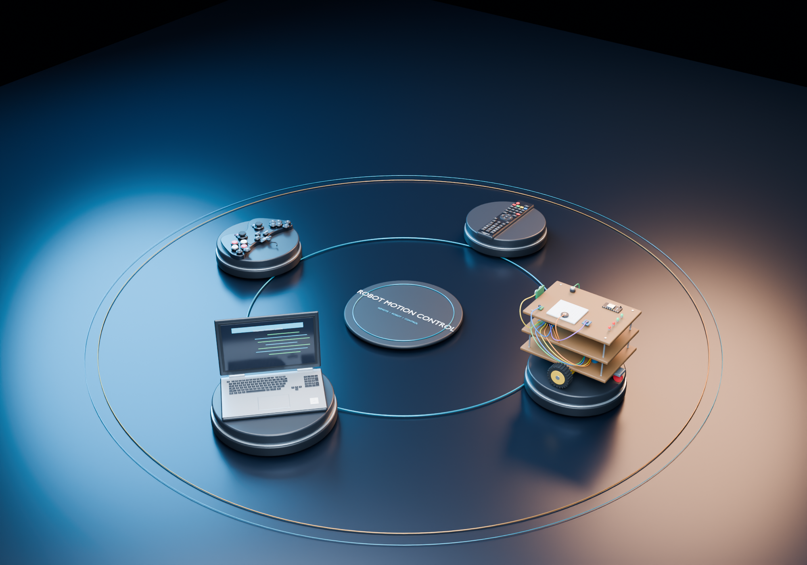

01 / ROBOT MOTION CONTROLEMBEDDED · WEB · 3DPROTOTYPE / INTEGRATION IN PROGRESS
Robot Motion Control
& Gamepad Calibration
A prototype joining a controller-calibration utility, a browser control studio, Python tooling and Arduino/ESP32 firmware with Blender and GLB visual models.
The 3D scene is a visual model. Full physical robot motion and ESP32 Bluetooth control are not claimed as verified.